The basic usage of this package is demonstrated below.
1) Normal model
1.2) MCMC Simulation
# Set priors
n_states_inferred <- 3
prior_T <- generate_random_T(n_states_inferred)
prior_means <- c(-7, -1, 12)
prior_sd <- 3
# Run MCMC
res_normal <- hmm_mcmc_normal(data = simdata,
prior_T = prior_T,
prior_means = prior_means,
prior_sd = prior_sd,
iter = 1500,
print_params = FALSE,
verbose = FALSE)
res_normal
#> Model: HMM Normal
#> Type: MCMC
#> Iter: 1500
#> Warmup: 300
#> Thin: 1
#> States: 3
summary_res_normal <- summary(res_normal)
#> Estimated means:
#> mean[1] mean[2] mean[3]
#> -4.97645850 0.03477157 4.89823302
#>
#> Estimated sd:
#> 1.529603
#>
#> Estimated transition rates:
#> 1 2 3
#> 1 0.93888841 0.06111159 0.00000000
#> 2 0.02300246 0.96378052 0.01321701
#> 3 0.00000000 0.04491058 0.95508942
#>
#> Assigned states:
#> 1 2 3
#> 230 614 180
#>
#> Approximate Kullback-Leibler divergence:
#> -0.001288293
#>
#> Log Likelihood:
#> mean sd median
#> -2057.364949 1.862968 -2057.019565 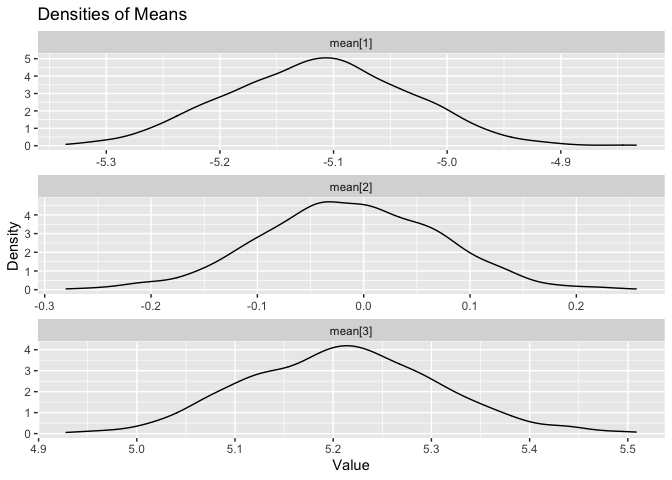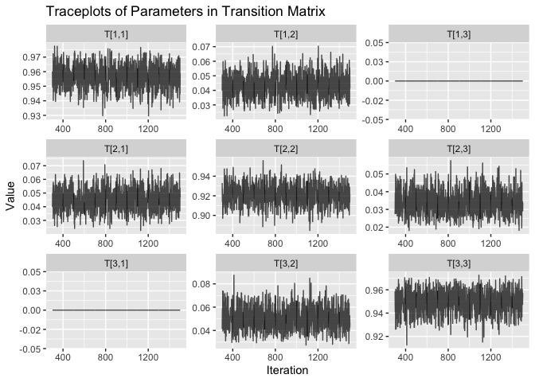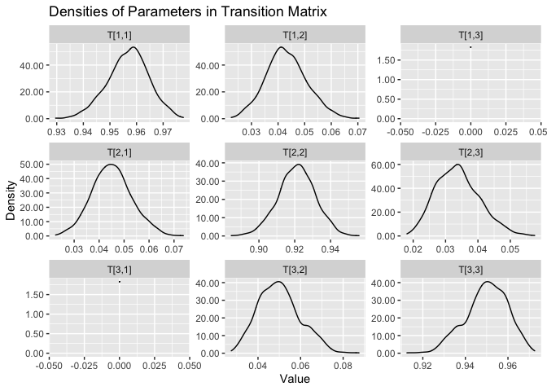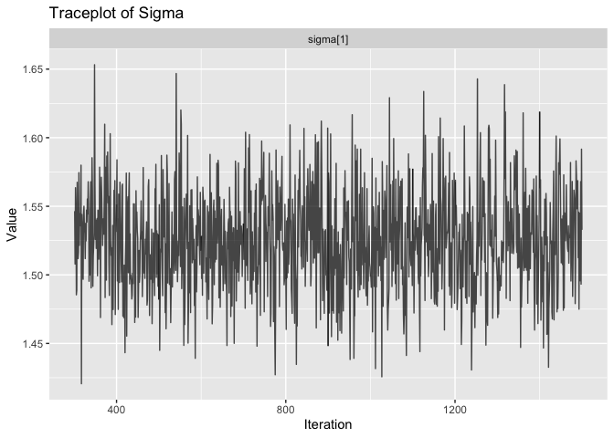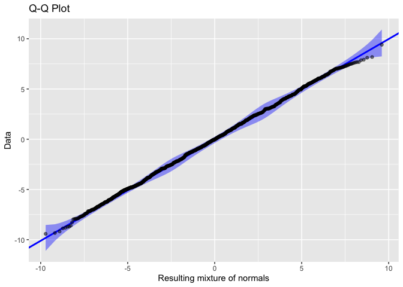
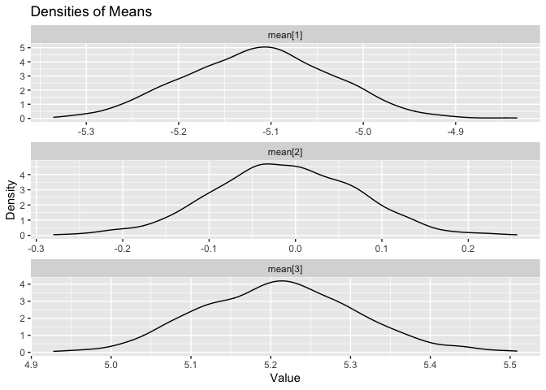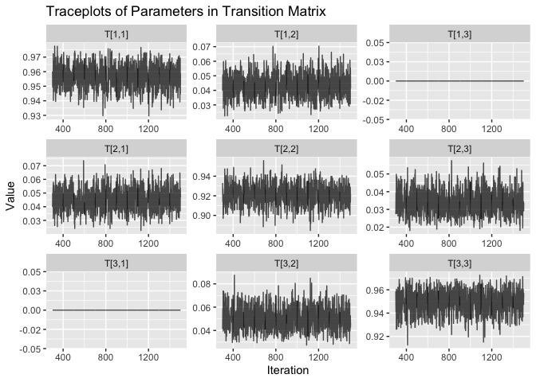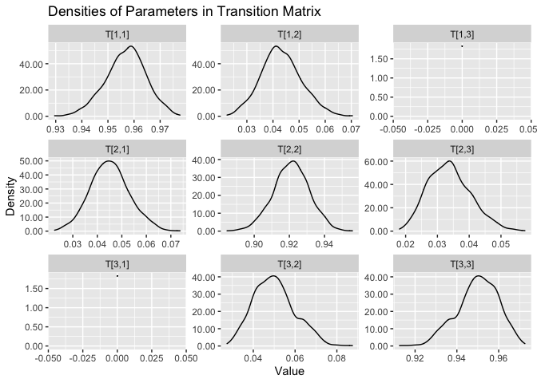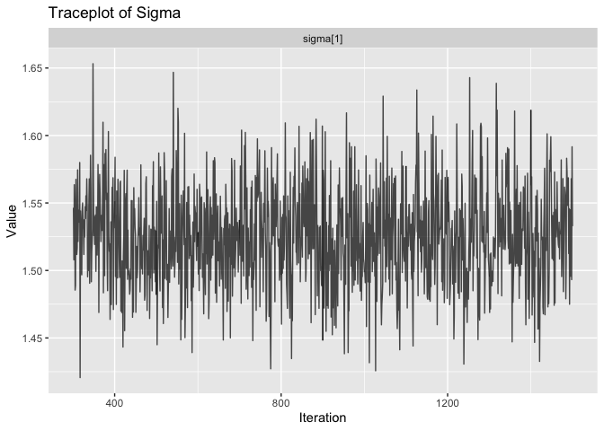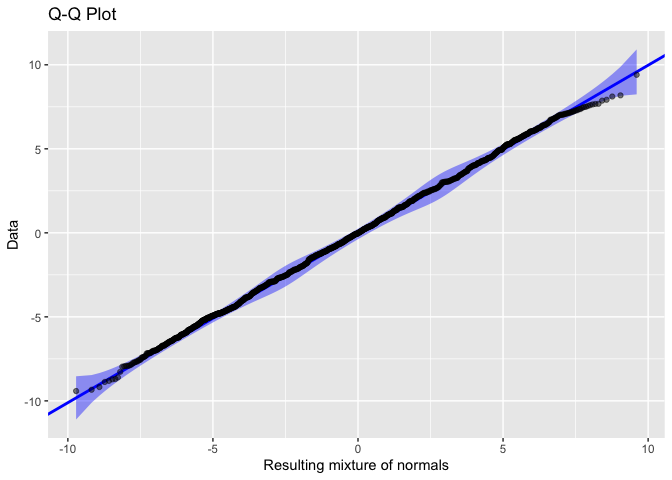 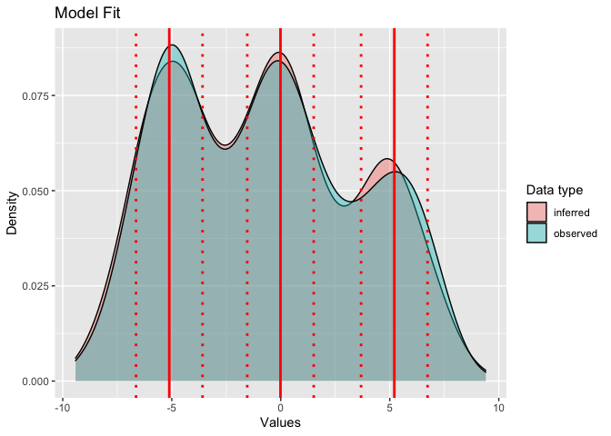
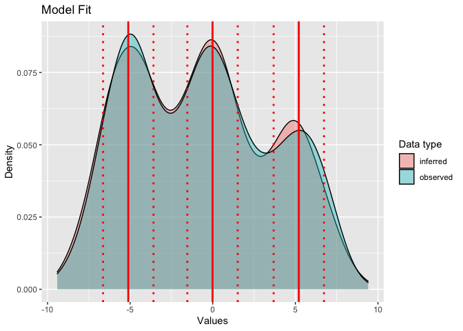